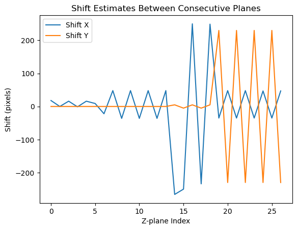

5. Collate Planes#
In this notebook, we merge CNMF results across each of our z-planes.
%gui qt
import sys
from pathlib import Path
import os
import numpy as np
import zarr
import napari
import logging
import lbm_caiman_python as lbm
# Importing this WONT WORK withotu adding to the path
sys.path.append('../..') # TODO: Take this out when we upload to pypi
import pandas as pd
import lbm_mc as mc
from mesmerize_viz import *
from lbm_mc.caiman_extensions.cnmf import cnmf_cache
try:
if __IPYTHON__:
get_ipython().run_line_magic('load_ext', 'autoreload')
get_ipython().run_line_magic('autoreload', '2')
except NameError:
pass
try:
import cv2
cv2.setNumThreads(0)
except():
pass
logging.basicConfig()
os.environ["CONDA_PREFIX_1"] = ""
if os.name == "nt":
# disable the cache on windows, this will be automatic in a future version
cnmf_cache.set_maxsize(0)
The autoreload extension is already loaded. To reload it, use:
%reload_ext autoreload
chan_order = (
np.array(
[
1,
5,
6,
7,
8,
9,
2,
10,
11,
12,
13,
14,
15,
16,
17,
3,
18,
19,
20,
21,
22,
23,
4,
24,
25,
26,
27,
28,
]
)
- 1
)
parent_path = Path().home() / "caiman_data" / 'animal_01' / "session_01"
batch_path = parent_path / 'batch.pickle'
cnmf_batch_path = parent_path / 'results' / 'cnmf_batch.pickle'
# you could alos load the registration batch and
# save this patch in a new dataframe (saved to disk automatically)
cnmf_df = mc.load_batch(cnmf_batch_path)
cnmf_df=cnmf_df.caiman.reload_from_disk()
mc.set_parent_raw_data_path(str(parent_path))
# create a new batch
try:
df = mc.load_batch(batch_path)
except (IsADirectoryError, FileNotFoundError):
df = mc.create_batch(batch_path)
df=df.caiman.reload_from_disk()
cnmf_df
| algo | item_name | input_movie_path | params | outputs | added_time | ran_time | algo_duration | comments | uuid | |
|---|---|---|---|---|---|---|---|---|---|---|
| 0 | cnmf | cnmf_1 | tiff\extracted_plane_1.tif | {'main': {'fr': 9.62, 'dxy': (1.0, 1.0), 'deca... | {'mean-projection-path': faeb27e8-40b9-4e5a-ad... | 2024-10-01T16:34:44 | 2024-10-01T16:54:16 | 946.94 sec | None | faeb27e8-40b9-4e5a-ad8c-b9cc73c03635 |
| 1 | cnmf | cnmf_1 | tiff\extracted_plane_2.tif | {'main': {'fr': 9.62, 'dxy': (1.0, 1.0), 'deca... | {'mean-projection-path': 89b676c7-9480-47d7-b1... | 2024-10-01T16:34:44 | 2024-10-01T17:10:06 | 949.6 sec | None | 89b676c7-9480-47d7-b190-e4bbc2a5decc |
| 2 | cnmf | cnmf_1 | tiff\extracted_plane_3.tif | {'main': {'fr': 9.62, 'dxy': (1.0, 1.0), 'deca... | {'mean-projection-path': f03ead24-ab13-48e7-87... | 2024-10-01T16:34:44 | 2024-10-01T17:28:57 | 1131.04 sec | None | f03ead24-ab13-48e7-87c0-27d5940a7c91 |
| 3 | cnmf | cnmf_1 | tiff\extracted_plane_4.tif | {'main': {'fr': 9.62, 'dxy': (1.0, 1.0), 'deca... | {'mean-projection-path': 585a0fc2-40d4-45f2-ba... | 2024-10-01T16:34:44 | 2024-10-01T17:51:18 | 1340.32 sec | None | 585a0fc2-40d4-45f2-badf-ba13d5cc77a6 |
| 4 | cnmf | cnmf_1 | tiff\extracted_plane_5.tif | {'main': {'fr': 9.62, 'dxy': (1.0, 1.0), 'deca... | {'mean-projection-path': 544c2a52-0b90-4b74-ba... | 2024-10-01T16:34:44 | 2024-10-01T18:08:22 | 1024.35 sec | None | 544c2a52-0b90-4b74-baae-b2ca913c7c2a |
| 5 | cnmf | cnmf_1 | tiff\extracted_plane_6.tif | {'main': {'fr': 9.62, 'dxy': (1.0, 1.0), 'deca... | {'mean-projection-path': d6c3f33c-2b90-4c6d-a4... | 2024-10-01T16:34:44 | 2024-10-01T18:24:00 | 937.73 sec | None | d6c3f33c-2b90-4c6d-a4ad-f237dae5f73b |
| 6 | cnmf | cnmf_1 | tiff\extracted_plane_7.tif | {'main': {'fr': 9.62, 'dxy': (1.0, 1.0), 'deca... | {'mean-projection-path': ca269a68-06d0-4f96-b5... | 2024-10-01T16:34:44 | 2024-10-01T18:39:39 | 939.58 sec | None | ca269a68-06d0-4f96-b508-87160fdf37ab |
| 7 | cnmf | cnmf_1 | tiff\extracted_plane_8.tif | {'main': {'fr': 9.62, 'dxy': (1.0, 1.0), 'deca... | {'mean-projection-path': a9cb2077-073a-4552-96... | 2024-10-01T16:34:44 | 2024-10-01T18:55:09 | 929.57 sec | None | a9cb2077-073a-4552-9669-e53ba0c96803 |
| 8 | cnmf | cnmf_1 | tiff\extracted_plane_9.tif | {'main': {'fr': 9.62, 'dxy': (1.0, 1.0), 'deca... | {'mean-projection-path': c0205f69-ccb6-4304-9c... | 2024-10-01T16:34:44 | 2024-10-01T19:10:49 | 940.35 sec | None | c0205f69-ccb6-4304-9cee-18af09d11663 |
| 9 | cnmf | cnmf_1 | tiff\extracted_plane_10.tif | {'main': {'fr': 9.62, 'dxy': (1.0, 1.0), 'deca... | {'mean-projection-path': 1fac642d-6cef-4a68-94... | 2024-10-01T16:34:44 | 2024-10-01T19:28:15 | 1045.02 sec | None | 1fac642d-6cef-4a68-9415-737213b4462d |
| 10 | cnmf | cnmf_1 | tiff\extracted_plane_11.tif | {'main': {'fr': 9.62, 'dxy': (1.0, 1.0), 'deca... | {'mean-projection-path': 97569a0f-b5c4-41b5-92... | 2024-10-01T16:34:44 | 2024-10-01T19:45:46 | 1051.62 sec | None | 97569a0f-b5c4-41b5-9268-b4ddeda9d740 |
| 11 | cnmf | cnmf_1 | tiff\extracted_plane_12.tif | {'main': {'fr': 9.62, 'dxy': (1.0, 1.0), 'deca... | {'mean-projection-path': c2d0864d-1313-4ded-8b... | 2024-10-01T16:34:44 | 2024-10-01T20:01:40 | 953.4 sec | None | c2d0864d-1313-4ded-8b7f-4a7f02947b2d |
| 12 | cnmf | cnmf_1 | tiff\extracted_plane_13.tif | {'main': {'fr': 9.62, 'dxy': (1.0, 1.0), 'deca... | {'mean-projection-path': 8301c084-fe7c-4e84-b8... | 2024-10-01T16:34:44 | 2024-10-01T20:17:40 | 960.7 sec | None | 8301c084-fe7c-4e84-b8d7-db6fcc8893ed |
| 13 | cnmf | cnmf_1 | tiff\extracted_plane_14.tif | {'main': {'fr': 9.62, 'dxy': (1.0, 1.0), 'deca... | {'mean-projection-path': 1eabd9f9-1a57-4c08-a8... | 2024-10-01T16:34:44 | 2024-10-01T20:33:51 | 970.13 sec | None | 1eabd9f9-1a57-4c08-a830-9276371c00a9 |
| 14 | cnmf | cnmf_1 | tiff\extracted_plane_15.tif | {'main': {'fr': 9.62, 'dxy': (1.0, 1.0), 'deca... | {'mean-projection-path': 25be7a5b-dd16-42cd-bd... | 2024-10-01T16:34:44 | 2024-10-01T20:52:06 | 1095.19 sec | None | 25be7a5b-dd16-42cd-bd4a-1312b4c6e791 |
| 15 | cnmf | cnmf_1 | tiff\extracted_plane_16.tif | {'main': {'fr': 9.62, 'dxy': (1.0, 1.0), 'deca... | {'mean-projection-path': f87dc096-6bb2-40dd-8d... | 2024-10-01T16:34:44 | 2024-10-01T21:08:23 | 977.02 sec | None | f87dc096-6bb2-40dd-8dff-20f1362423b0 |
| 16 | cnmf | cnmf_1 | tiff\extracted_plane_17.tif | {'main': {'fr': 9.62, 'dxy': (1.0, 1.0), 'deca... | {'mean-projection-path': 0e6f8223-3002-4430-a9... | 2024-10-01T16:34:44 | 2024-10-01T21:28:21 | 1197.8 sec | None | 0e6f8223-3002-4430-a987-d83a6d7c7bd8 |
| 17 | cnmf | cnmf_1 | tiff\extracted_plane_18.tif | {'main': {'fr': 9.62, 'dxy': (1.0, 1.0), 'deca... | {'mean-projection-path': 52ab80e3-880f-4ae5-bd... | 2024-10-01T16:34:44 | 2024-10-01T21:46:45 | 1104.12 sec | None | 52ab80e3-880f-4ae5-bd38-711c0138ebe2 |
| 18 | cnmf | cnmf_1 | tiff\extracted_plane_19.tif | {'main': {'fr': 9.62, 'dxy': (1.0, 1.0), 'deca... | {'mean-projection-path': 65c8dfa4-2a65-4618-82... | 2024-10-01T16:34:44 | 2024-10-01T22:05:32 | 1126.88 sec | None | 65c8dfa4-2a65-4618-8240-7f08fccce4ad |
| 19 | cnmf | cnmf_1 | tiff\extracted_plane_20.tif | {'main': {'fr': 9.62, 'dxy': (1.0, 1.0), 'deca... | {'mean-projection-path': 473b088b-1b8e-4ecb-97... | 2024-10-01T16:34:44 | 2024-10-01T22:23:00 | 1048.28 sec | None | 473b088b-1b8e-4ecb-97e2-75eb299851b2 |
| 20 | cnmf | cnmf_1 | tiff\extracted_plane_21.tif | {'main': {'fr': 9.62, 'dxy': (1.0, 1.0), 'deca... | {'mean-projection-path': 60d2fc66-20a9-4f00-b6... | 2024-10-01T16:34:44 | 2024-10-01T22:41:10 | 1090.04 sec | None | 60d2fc66-20a9-4f00-b6f7-b9e80440efe7 |
| 21 | cnmf | cnmf_1 | tiff\extracted_plane_22.tif | {'main': {'fr': 9.62, 'dxy': (1.0, 1.0), 'deca... | {'mean-projection-path': 8926526d-cc18-47e2-b5... | 2024-10-01T16:34:44 | 2024-10-01T23:01:26 | 1215.23 sec | None | 8926526d-cc18-47e2-b599-1496b2c9f03e |
| 22 | cnmf | cnmf_1 | tiff\extracted_plane_23.tif | {'main': {'fr': 9.62, 'dxy': (1.0, 1.0), 'deca... | {'mean-projection-path': f2b1c811-e02a-4058-a1... | 2024-10-01T16:34:44 | 2024-10-01T23:20:00 | 1114.08 sec | None | f2b1c811-e02a-4058-a15b-861ee1128793 |
| 23 | cnmf | cnmf_1 | tiff\extracted_plane_24.tif | {'main': {'fr': 9.62, 'dxy': (1.0, 1.0), 'deca... | {'mean-projection-path': 5c9bd42e-fb07-43f0-a1... | 2024-10-01T16:34:44 | 2024-10-01T23:38:35 | 1114.86 sec | None | 5c9bd42e-fb07-43f0-a18d-0b9e516db4ec |
| 24 | cnmf | cnmf_1 | tiff\extracted_plane_25.tif | {'main': {'fr': 9.62, 'dxy': (1.0, 1.0), 'deca... | {'mean-projection-path': 84004c56-81c1-474b-ab... | 2024-10-01T16:34:44 | 2024-10-01T23:57:28 | 1132.94 sec | None | 84004c56-81c1-474b-ab38-327fbf79bf8c |
| 25 | cnmf | cnmf_1 | tiff\extracted_plane_26.tif | {'main': {'fr': 9.62, 'dxy': (1.0, 1.0), 'deca... | {'mean-projection-path': 23521021-6791-4d41-85... | 2024-10-01T16:34:44 | 2024-10-02T00:14:28 | 1019.75 sec | None | 23521021-6791-4d41-855d-779eefce6840 |
| 26 | cnmf | cnmf_1 | tiff\extracted_plane_27.tif | {'main': {'fr': 9.62, 'dxy': (1.0, 1.0), 'deca... | {'mean-projection-path': 07907a0b-b138-41e3-99... | 2024-10-01T16:34:44 | 2024-10-02T00:34:07 | 1179.51 sec | None | 07907a0b-b138-41e3-99a7-f7153738a640 |
| 27 | cnmf | cnmf_1 | tiff\extracted_plane_28.tif | {'main': {'fr': 9.62, 'dxy': (1.0, 1.0), 'deca... | {'mean-projection-path': 8b7cbfb4-7c62-4780-a9... | 2024-10-01T16:34:44 | 2024-10-02T00:49:55 | 947.96 sec | None | 8b7cbfb4-7c62-4780-a90c-5275cbe1f318 |
5.1. Get outputs for each z-plane#
results = {}
for i, row in cnmf_df.iterrows():
if row["outputs"] is not None and row['algo']=='cnmf': # item has already been run
results[i] = cnmf_df.iloc[i].cnmf.get_output()
results
{0: <caiman.source_extraction.cnmf.cnmf.CNMF at 0x18ed447b1f0>,
1: <caiman.source_extraction.cnmf.cnmf.CNMF at 0x18ed447b730>,
2: <caiman.source_extraction.cnmf.cnmf.CNMF at 0x18ed447b340>,
3: <caiman.source_extraction.cnmf.cnmf.CNMF at 0x18ed4479e10>,
4: <caiman.source_extraction.cnmf.cnmf.CNMF at 0x18ed447b0a0>,
5: <caiman.source_extraction.cnmf.cnmf.CNMF at 0x18e6b3ba3e0>,
6: <caiman.source_extraction.cnmf.cnmf.CNMF at 0x18e6b3ba980>,
7: <caiman.source_extraction.cnmf.cnmf.CNMF at 0x18e6b3baa40>,
8: <caiman.source_extraction.cnmf.cnmf.CNMF at 0x18e6b3b8a60>,
9: <caiman.source_extraction.cnmf.cnmf.CNMF at 0x18e6b3b83d0>,
10: <caiman.source_extraction.cnmf.cnmf.CNMF at 0x18e6b3baa70>,
11: <caiman.source_extraction.cnmf.cnmf.CNMF at 0x18e6b3bb790>,
12: <caiman.source_extraction.cnmf.cnmf.CNMF at 0x18ed447b4c0>,
13: <caiman.source_extraction.cnmf.cnmf.CNMF at 0x18e6b3bada0>,
14: <caiman.source_extraction.cnmf.cnmf.CNMF at 0x18e6b3b81f0>,
15: <caiman.source_extraction.cnmf.cnmf.CNMF at 0x18e6b3a9c90>,
16: <caiman.source_extraction.cnmf.cnmf.CNMF at 0x18e6b3aa5f0>,
17: <caiman.source_extraction.cnmf.cnmf.CNMF at 0x18e6b3a8be0>,
18: <caiman.source_extraction.cnmf.cnmf.CNMF at 0x18e6b3aaf50>,
19: <caiman.source_extraction.cnmf.cnmf.CNMF at 0x18e6b3aa020>,
20: <caiman.source_extraction.cnmf.cnmf.CNMF at 0x18e6b3aa170>,
21: <caiman.source_extraction.cnmf.cnmf.CNMF at 0x18e6b3bb1f0>,
22: <caiman.source_extraction.cnmf.cnmf.CNMF at 0x18ed447b2b0>,
23: <caiman.source_extraction.cnmf.cnmf.CNMF at 0x18e6b3a9a80>,
24: <caiman.source_extraction.cnmf.cnmf.CNMF at 0x18e6b3a09d0>,
25: <caiman.source_extraction.cnmf.cnmf.CNMF at 0x18e6b3a0820>,
26: <caiman.source_extraction.cnmf.cnmf.CNMF at 0x18e6b3a3010>,
27: <caiman.source_extraction.cnmf.cnmf.CNMF at 0x18ed447be20>}
e1 = results[0].estimates
e2 = results[1].estimates
import numpy as np
from scipy.sparse import csr_matrix, vstack
from caiman.source_extraction.cnmf import estimates
from scipy.sparse import lil_matrix
%load_ext autoreload
%autoreload 2
import lbm_caiman_python as lbm
res = lbm.collation.combine_z_planes(results)
The autoreload extension is already loaded. To reload it, use:
%reload_ext autoreload
5.2. Total number of Neurons#
comps = {}
for i, row in cnmf_df.iterrows():
if row["outputs"] is not None and row['algo']=='cnmf': # item has already been run
comps[i] = cnmf_df.iloc[i].cnmf.get_good_components()
comps
{0: array([ 1, 2, 4, ..., 8919, 8920, 8921]),
1: array([ 0, 1, 2, ..., 9015, 9017, 9018]),
2: array([ 0, 1, 2, ..., 8788, 8789, 8791]),
3: array([ 1, 3, 4, ..., 10061, 10063, 10065]),
4: array([ 0, 1, 4, ..., 8774, 8775, 8776]),
5: array([ 0, 1, 3, ..., 8845, 8846, 8848]),
6: array([ 0, 1, 2, ..., 8814, 8816, 8818]),
7: array([ 0, 1, 2, ..., 8846, 8847, 8848]),
8: array([ 0, 1, 3, ..., 8880, 8881, 8882]),
9: array([ 0, 2, 3, ..., 9042, 9043, 9044]),
10: array([ 3, 5, 6, ..., 9312, 9313, 9314]),
11: array([ 1, 7, 9, ..., 9460, 9461, 9462]),
12: array([ 4, 5, 9, ..., 9752, 9754, 9755]),
13: array([ 1, 3, 4, ..., 9915, 9917, 9918]),
14: array([ 0, 1, 3, ..., 10016, 10048, 10051]),
15: array([ 0, 1, 2, ..., 10127, 10128, 10129]),
16: array([ 0, 1, 2, ..., 10024, 10025, 10026]),
17: array([ 0, 1, 2, ..., 9151, 9152, 9154]),
18: array([ 0, 1, 2, ..., 9234, 9235, 9236]),
19: array([ 0, 1, 2, ..., 9453, 9456, 9457]),
20: array([ 0, 5, 8, ..., 9821, 9822, 9823]),
21: array([ 0, 4, 7, ..., 9972, 9973, 9974]),
22: array([ 0, 6, 22, ..., 10088, 10090, 10091]),
23: array([ 0, 2, 5, ..., 10213, 10214, 10215]),
24: array([ 1, 31, 48, ..., 10341, 10344, 10345]),
25: array([ 6, 9, 36, ..., 10460, 10472, 10475]),
26: array([ 16, 32, 45, ..., 10406, 10408, 10412]),
27: array([ 2, 18, 27, ..., 10316, 10317, 10324])}
num_components = [len(c) for c in comps.values()]
sum(num_components)
73973
from ipywidgets import Tab, interact_manual
@interact_manual(parent_path=str(parent_path), batch_path=str(cnmf_batch_path))
def start_widget(parent_path, batch_path):
mc.set_parent_raw_data_path(parent_path)
df = mc.load_batch(batch_path)
tab = Tab()
# mcorr_container = df.mcorr.viz()
cnmf_container = df.cnmf.viz(start_index=1)
tab.children = [cnmf_container.show()]
tab.titles = ["cnmf"]
display(tab)
5.3. Combine results of different z_planes#
df_rows = cnmf_df.iloc[cnmf_df[cnmf_df['algo']=='cnmf'].index].copy()
df_rows
| algo | item_name | input_movie_path | params | outputs | added_time | ran_time | algo_duration | comments | uuid | |
|---|---|---|---|---|---|---|---|---|---|---|
| 0 | cnmf | cnmf_1 | tiff\extracted_plane_1.tif | {'main': {'fr': 9.62, 'dxy': (1.0, 1.0), 'deca... | {'mean-projection-path': faeb27e8-40b9-4e5a-ad... | 2024-10-01T16:34:44 | 2024-10-01T16:54:16 | 946.94 sec | None | faeb27e8-40b9-4e5a-ad8c-b9cc73c03635 |
| 1 | cnmf | cnmf_1 | tiff\extracted_plane_2.tif | {'main': {'fr': 9.62, 'dxy': (1.0, 1.0), 'deca... | {'mean-projection-path': 89b676c7-9480-47d7-b1... | 2024-10-01T16:34:44 | 2024-10-01T17:10:06 | 949.6 sec | None | 89b676c7-9480-47d7-b190-e4bbc2a5decc |
| 2 | cnmf | cnmf_1 | tiff\extracted_plane_3.tif | {'main': {'fr': 9.62, 'dxy': (1.0, 1.0), 'deca... | {'mean-projection-path': f03ead24-ab13-48e7-87... | 2024-10-01T16:34:44 | 2024-10-01T17:28:57 | 1131.04 sec | None | f03ead24-ab13-48e7-87c0-27d5940a7c91 |
| 3 | cnmf | cnmf_1 | tiff\extracted_plane_4.tif | {'main': {'fr': 9.62, 'dxy': (1.0, 1.0), 'deca... | {'mean-projection-path': 585a0fc2-40d4-45f2-ba... | 2024-10-01T16:34:44 | 2024-10-01T17:51:18 | 1340.32 sec | None | 585a0fc2-40d4-45f2-badf-ba13d5cc77a6 |
| 4 | cnmf | cnmf_1 | tiff\extracted_plane_5.tif | {'main': {'fr': 9.62, 'dxy': (1.0, 1.0), 'deca... | {'mean-projection-path': 544c2a52-0b90-4b74-ba... | 2024-10-01T16:34:44 | 2024-10-01T18:08:22 | 1024.35 sec | None | 544c2a52-0b90-4b74-baae-b2ca913c7c2a |
| 5 | cnmf | cnmf_1 | tiff\extracted_plane_6.tif | {'main': {'fr': 9.62, 'dxy': (1.0, 1.0), 'deca... | {'mean-projection-path': d6c3f33c-2b90-4c6d-a4... | 2024-10-01T16:34:44 | 2024-10-01T18:24:00 | 937.73 sec | None | d6c3f33c-2b90-4c6d-a4ad-f237dae5f73b |
| 6 | cnmf | cnmf_1 | tiff\extracted_plane_7.tif | {'main': {'fr': 9.62, 'dxy': (1.0, 1.0), 'deca... | {'mean-projection-path': ca269a68-06d0-4f96-b5... | 2024-10-01T16:34:44 | 2024-10-01T18:39:39 | 939.58 sec | None | ca269a68-06d0-4f96-b508-87160fdf37ab |
| 7 | cnmf | cnmf_1 | tiff\extracted_plane_8.tif | {'main': {'fr': 9.62, 'dxy': (1.0, 1.0), 'deca... | {'mean-projection-path': a9cb2077-073a-4552-96... | 2024-10-01T16:34:44 | 2024-10-01T18:55:09 | 929.57 sec | None | a9cb2077-073a-4552-9669-e53ba0c96803 |
| 8 | cnmf | cnmf_1 | tiff\extracted_plane_9.tif | {'main': {'fr': 9.62, 'dxy': (1.0, 1.0), 'deca... | {'mean-projection-path': c0205f69-ccb6-4304-9c... | 2024-10-01T16:34:44 | 2024-10-01T19:10:49 | 940.35 sec | None | c0205f69-ccb6-4304-9cee-18af09d11663 |
| 9 | cnmf | cnmf_1 | tiff\extracted_plane_10.tif | {'main': {'fr': 9.62, 'dxy': (1.0, 1.0), 'deca... | {'mean-projection-path': 1fac642d-6cef-4a68-94... | 2024-10-01T16:34:44 | 2024-10-01T19:28:15 | 1045.02 sec | None | 1fac642d-6cef-4a68-9415-737213b4462d |
| 10 | cnmf | cnmf_1 | tiff\extracted_plane_11.tif | {'main': {'fr': 9.62, 'dxy': (1.0, 1.0), 'deca... | {'mean-projection-path': 97569a0f-b5c4-41b5-92... | 2024-10-01T16:34:44 | 2024-10-01T19:45:46 | 1051.62 sec | None | 97569a0f-b5c4-41b5-9268-b4ddeda9d740 |
| 11 | cnmf | cnmf_1 | tiff\extracted_plane_12.tif | {'main': {'fr': 9.62, 'dxy': (1.0, 1.0), 'deca... | {'mean-projection-path': c2d0864d-1313-4ded-8b... | 2024-10-01T16:34:44 | 2024-10-01T20:01:40 | 953.4 sec | None | c2d0864d-1313-4ded-8b7f-4a7f02947b2d |
| 12 | cnmf | cnmf_1 | tiff\extracted_plane_13.tif | {'main': {'fr': 9.62, 'dxy': (1.0, 1.0), 'deca... | {'mean-projection-path': 8301c084-fe7c-4e84-b8... | 2024-10-01T16:34:44 | 2024-10-01T20:17:40 | 960.7 sec | None | 8301c084-fe7c-4e84-b8d7-db6fcc8893ed |
| 13 | cnmf | cnmf_1 | tiff\extracted_plane_14.tif | {'main': {'fr': 9.62, 'dxy': (1.0, 1.0), 'deca... | {'mean-projection-path': 1eabd9f9-1a57-4c08-a8... | 2024-10-01T16:34:44 | 2024-10-01T20:33:51 | 970.13 sec | None | 1eabd9f9-1a57-4c08-a830-9276371c00a9 |
| 14 | cnmf | cnmf_1 | tiff\extracted_plane_15.tif | {'main': {'fr': 9.62, 'dxy': (1.0, 1.0), 'deca... | {'mean-projection-path': 25be7a5b-dd16-42cd-bd... | 2024-10-01T16:34:44 | 2024-10-01T20:52:06 | 1095.19 sec | None | 25be7a5b-dd16-42cd-bd4a-1312b4c6e791 |
| 15 | cnmf | cnmf_1 | tiff\extracted_plane_16.tif | {'main': {'fr': 9.62, 'dxy': (1.0, 1.0), 'deca... | {'mean-projection-path': f87dc096-6bb2-40dd-8d... | 2024-10-01T16:34:44 | 2024-10-01T21:08:23 | 977.02 sec | None | f87dc096-6bb2-40dd-8dff-20f1362423b0 |
| 16 | cnmf | cnmf_1 | tiff\extracted_plane_17.tif | {'main': {'fr': 9.62, 'dxy': (1.0, 1.0), 'deca... | {'mean-projection-path': 0e6f8223-3002-4430-a9... | 2024-10-01T16:34:44 | 2024-10-01T21:28:21 | 1197.8 sec | None | 0e6f8223-3002-4430-a987-d83a6d7c7bd8 |
| 17 | cnmf | cnmf_1 | tiff\extracted_plane_18.tif | {'main': {'fr': 9.62, 'dxy': (1.0, 1.0), 'deca... | {'mean-projection-path': 52ab80e3-880f-4ae5-bd... | 2024-10-01T16:34:44 | 2024-10-01T21:46:45 | 1104.12 sec | None | 52ab80e3-880f-4ae5-bd38-711c0138ebe2 |
| 18 | cnmf | cnmf_1 | tiff\extracted_plane_19.tif | {'main': {'fr': 9.62, 'dxy': (1.0, 1.0), 'deca... | {'mean-projection-path': 65c8dfa4-2a65-4618-82... | 2024-10-01T16:34:44 | 2024-10-01T22:05:32 | 1126.88 sec | None | 65c8dfa4-2a65-4618-8240-7f08fccce4ad |
| 19 | cnmf | cnmf_1 | tiff\extracted_plane_20.tif | {'main': {'fr': 9.62, 'dxy': (1.0, 1.0), 'deca... | {'mean-projection-path': 473b088b-1b8e-4ecb-97... | 2024-10-01T16:34:44 | 2024-10-01T22:23:00 | 1048.28 sec | None | 473b088b-1b8e-4ecb-97e2-75eb299851b2 |
| 20 | cnmf | cnmf_1 | tiff\extracted_plane_21.tif | {'main': {'fr': 9.62, 'dxy': (1.0, 1.0), 'deca... | {'mean-projection-path': 60d2fc66-20a9-4f00-b6... | 2024-10-01T16:34:44 | 2024-10-01T22:41:10 | 1090.04 sec | None | 60d2fc66-20a9-4f00-b6f7-b9e80440efe7 |
| 21 | cnmf | cnmf_1 | tiff\extracted_plane_22.tif | {'main': {'fr': 9.62, 'dxy': (1.0, 1.0), 'deca... | {'mean-projection-path': 8926526d-cc18-47e2-b5... | 2024-10-01T16:34:44 | 2024-10-01T23:01:26 | 1215.23 sec | None | 8926526d-cc18-47e2-b599-1496b2c9f03e |
| 22 | cnmf | cnmf_1 | tiff\extracted_plane_23.tif | {'main': {'fr': 9.62, 'dxy': (1.0, 1.0), 'deca... | {'mean-projection-path': f2b1c811-e02a-4058-a1... | 2024-10-01T16:34:44 | 2024-10-01T23:20:00 | 1114.08 sec | None | f2b1c811-e02a-4058-a15b-861ee1128793 |
| 23 | cnmf | cnmf_1 | tiff\extracted_plane_24.tif | {'main': {'fr': 9.62, 'dxy': (1.0, 1.0), 'deca... | {'mean-projection-path': 5c9bd42e-fb07-43f0-a1... | 2024-10-01T16:34:44 | 2024-10-01T23:38:35 | 1114.86 sec | None | 5c9bd42e-fb07-43f0-a18d-0b9e516db4ec |
| 24 | cnmf | cnmf_1 | tiff\extracted_plane_25.tif | {'main': {'fr': 9.62, 'dxy': (1.0, 1.0), 'deca... | {'mean-projection-path': 84004c56-81c1-474b-ab... | 2024-10-01T16:34:44 | 2024-10-01T23:57:28 | 1132.94 sec | None | 84004c56-81c1-474b-ab38-327fbf79bf8c |
| 25 | cnmf | cnmf_1 | tiff\extracted_plane_26.tif | {'main': {'fr': 9.62, 'dxy': (1.0, 1.0), 'deca... | {'mean-projection-path': 23521021-6791-4d41-85... | 2024-10-01T16:34:44 | 2024-10-02T00:14:28 | 1019.75 sec | None | 23521021-6791-4d41-855d-779eefce6840 |
| 26 | cnmf | cnmf_1 | tiff\extracted_plane_27.tif | {'main': {'fr': 9.62, 'dxy': (1.0, 1.0), 'deca... | {'mean-projection-path': 07907a0b-b138-41e3-99... | 2024-10-01T16:34:44 | 2024-10-02T00:34:07 | 1179.51 sec | None | 07907a0b-b138-41e3-99a7-f7153738a640 |
| 27 | cnmf | cnmf_1 | tiff\extracted_plane_28.tif | {'main': {'fr': 9.62, 'dxy': (1.0, 1.0), 'deca... | {'mean-projection-path': 8b7cbfb4-7c62-4780-a9... | 2024-10-01T16:34:44 | 2024-10-02T00:49:55 | 947.96 sec | None | 8b7cbfb4-7c62-4780-a90c-5275cbe1f318 |
import dask.array as da
projs = da.stack([da.from_array(row.caiman.get_projection('mean')) for i, row in df_rows.iterrows() if row["outputs"] is not None and row['algo']=='cnmf'])
projs.shape
(28, 583, 536)
# sort first index according to chan_order
projs = projs[chan_order]
import fastplotlib as fpl
widget = fpl.ImageWidget(projs)
widget.show()
---------------------------------------------------------------------------
ValueError Traceback (most recent call last)
Cell In[61], line 3
1 import fastplotlib as fpl
----> 3 widget = fpl.ImageWidget(projs)
4 widget.show()
File ~\anaconda3\envs\mescore\lib\site-packages\fastplotlib\widgets\image.py:577, in ImageWidget.__init__(self, data, dims_order, slider_dims, window_funcs, frame_apply, grid_shape, names, grid_plot_kwargs, histogram_widget, **kwargs)
574 subplot.set_title(name)
576 if histogram_widget:
--> 577 hlut = HistogramLUT(
578 data=d,
579 image_graphic=ig,
580 name="histogram_lut"
581 )
583 subplot.docks["right"].add_graphic(hlut)
584 subplot.docks["right"].size = 80
File ~\anaconda3\envs\mescore\lib\site-packages\fastplotlib\widgets\histogram_lut.py:44, in HistogramLUT.__init__(self, data, image_graphic, nbins, flank_divisor, **kwargs)
40 self._data = weakref.proxy(data)
42 self._scale_factor: float = 1.0
---> 44 hist, edges, hist_scaled, edges_flanked = self._calculate_histogram(data)
46 line_data = np.column_stack([hist_scaled, edges_flanked])
48 self.line = LineGraphic(line_data)
File ~\anaconda3\envs\mescore\lib\site-packages\fastplotlib\widgets\histogram_lut.py:146, in HistogramLUT._calculate_histogram(self, data)
142 ss2 = max(1, int(data.shape[2] / 100))
144 data_ss = data[::ss0, ::ss1, ::ss2]
--> 146 hist, edges = np.histogram(data_ss, bins=self._nbins)
148 else:
149 # allow max of 1000 x 1000
150 # this takes ~4ms on a 8 core Ryzen laptop
151 ss0 = max(1, int(data.shape[0] / 1_000))
File ~\anaconda3\envs\mescore\lib\site-packages\dask\array\core.py:1756, in Array.__array_function__(self, func, types, args, kwargs)
1753 if has_keyword(da_func, "like"):
1754 kwargs["like"] = self
-> 1756 return da_func(*args, **kwargs)
File ~\anaconda3\envs\mescore\lib\site-packages\dask\array\routines.py:962, in histogram(a, bins, range, normed, weights, density)
959 scalar_bins = np.ndim(bins) == 0
961 if bins is None or (scalar_bins and range is None):
--> 962 raise ValueError(
963 "dask.array.histogram requires either specifying "
964 "bins as an iterable or specifying both a range and "
965 "the number of bins"
966 )
968 if weights is not None and weights.chunks != a.chunks:
969 raise ValueError("Input array and weights must have the same chunked structure")
ValueError: dask.array.histogram requires either specifying bins as an iterable or specifying both a range and the number of bins
widget.close()
import napari
napari.view_image(projs, name = 'z-stack')
Viewer(camera=Camera(center=(0.0, 291.0, 267.5), zoom=1.0244402985074625, angles=(0.0, 0.0, 90.0), perspective=0.0, mouse_pan=True, mouse_zoom=True), cursor=Cursor(position=(13.0, 1.0, 0.0), scaled=True, style=<CursorStyle.STANDARD: 'standard'>, size=1.0), dims=Dims(ndim=3, ndisplay=2, order=(0, 1, 2), axis_labels=('0', '1', '2'), rollable=(True, True, True), range=(RangeTuple(start=0.0, stop=27.0, step=1.0), RangeTuple(start=0.0, stop=582.0, step=1.0), RangeTuple(start=0.0, stop=535.0, step=1.0)), margin_left=(0.0, 0.0, 0.0), margin_right=(0.0, 0.0, 0.0), point=(13.0, 291.0, 267.0), last_used=0), grid=GridCanvas(stride=1, shape=(-1, -1), enabled=False), layers=[<Image layer 'z-stack' at 0x196004b0910>], help='use <2> for transform', status='Ready', tooltip=Tooltip(visible=False, text=''), theme='dark', title='napari', mouse_over_canvas=False, mouse_move_callbacks=[], mouse_drag_callbacks=[], mouse_double_click_callbacks=[], mouse_wheel_callbacks=[<function dims_scroll at 0x00000195FCF8DBD0>], _persisted_mouse_event={}, _mouse_drag_gen={}, _mouse_wheel_gen={}, _keymap={})
5.4. z-stack alignment#
5.5. 1. Align each plane to the reference plane#
reference_image = projs.mean(axis=0).compute()
5.6. 2. Align each plane to the reference plane#
from skimage.registration import phase_cross_correlation
from scipy.ndimage import shift
import dask
from dask import delayed
import napari
def compute_shift_and_align(image, template):
shift_estimate, error, diffphase = phase_cross_correlation(template, image)
print(f"Shift estimate: {shift_estimate}")
return shift(image, shift=(-shift_estimate[0], -shift_estimate[1]), mode='constant', cval=0)
compute_shift_and_align_delayed = delayed(compute_shift_and_align)
aligned_images = [
compute_shift_and_align_delayed(projs[i].compute(), reference_image)
for i in range(projs.shape[0])
]
aligned_images = dask.compute(*aligned_images)
aligned_stack = np.stack(aligned_images, axis=0)
aligned_stack = da.from_array(aligned_stack)
def compute_shift_and_align_pair(image1, image2):
shift_estimate, error, diffphase = phase_cross_correlation(image1, image2)
print(f"Shift estimate between planes: {shift_estimate}")
# Align image2 to image1
aligned_image = shift(image2, shift=(-shift_estimate[0], -shift_estimate[1]), mode='constant', cval=0)
return aligned_image, shift_estimate
aligned_images = []
shift_estimates = []
# Use the first image as the starting point
aligned_images.append(projs[0].compute())
for i in range(1, projs.shape[0]):
image1 = aligned_images[-1]
image2 = projs[i].compute()
aligned_image, shift_estimate = compute_shift_and_align_pair(image1, image2)
aligned_images.append(aligned_image)
shift_estimates.append(shift_estimate)
aligned_stack = np.stack(aligned_images, axis=0)
Shift estimate between planes: [ 0. 18.]
Shift estimate between planes: [0. 0.]
Shift estimate between planes: [ 0. 16.]
Shift estimate between planes: [ 0. -1.]
Shift estimate between planes: [ 0. 16.]
Shift estimate between planes: [0. 9.]
Shift estimate between planes: [ 0. -22.]
Shift estimate between planes: [ 0. 48.]
Shift estimate between planes: [ 0. -36.]
Shift estimate between planes: [ 0. 48.]
Shift estimate between planes: [ 0. -36.]
Shift estimate between planes: [ 0. 48.]
Shift estimate between planes: [ 0. -36.]
Shift estimate between planes: [ 0. 48.]
Shift estimate between planes: [ 5. -266.]
Shift estimate between planes: [ -5. -250.]
Shift estimate between planes: [ 5. 250.]
Shift estimate between planes: [ -5. -234.]
Shift estimate between planes: [ 5. 249.]
Shift estimate between planes: [230. -35.]
Shift estimate between planes: [-230. 48.]
Shift estimate between planes: [230. -35.]
Shift estimate between planes: [-230. 48.]
Shift estimate between planes: [230. -35.]
Shift estimate between planes: [-230. 47.]
Shift estimate between planes: [230. -35.]
Shift estimate between planes: [-230. 47.]
def visualize_transform(image_1, image_2):
from dipy.align.transforms import AffineTransform2D
from dipy.align.imaffine import AffineRegistration
import matplotlib.pyplot as plt
affreg = AffineRegistration()
transform = AffineTransform2D()
affine = affreg.optimize(image_1, image_2, transform, params0=None)
image_2_xform = affine.transform(image_2)
fig, axes = plt.subplots(1, 3, figsize=(8, 4))
ax = axes.ravel()
ax[0].imshow(image_1)
ax[1].imshow(image_2)
stereo = np.zeros((image_1.shape[0], image_1.shape[1], 3), dtype=np.uint8)
stereo[..., 0] = image_1
stereo[..., 1] = image_2_xform
ax[2].imshow(stereo)
fig.tight_layout()
return image_2_xform
tranformed = visualize_transform(projs[0].compute(), projs[1].compute())
data = np.stack([projs[0].compute(), tranformed], axis=0)
viewer = napari.view_image(data, name='Aligned Z-Planes')
Optimizing level 2 [max iter: 10000]
Optimizing level 1 [max iter: 1000]
Optimizing level 0 [max iter: 100]
shift_estimates = np.array(shift_estimates)
plt.figure()
plt.plot(shift_estimates[:, 1], label='Shift X')
plt.plot(shift_estimates[:, 0], label='Shift Y')
plt.legend()
plt.title('Shift Estimates Between Consecutive Planes')
plt.xlabel('Z-plane Index')
plt.ylabel('Shift (pixels)')
plt.show()

viewer = napari.view_image(projs, name = 'z-stack')
viewer.add_image(aligned_stack, name = 'aligned z-stack')
<Image layer 'aligned z-stack' at 0x196bec56d10>
import numpy as np
from skimage.registration import phase_cross_correlation
from scipy.ndimage import shift
import napari
import matplotlib.pyplot as plt
def compute_horizontal_shift_and_align_pair(image1, image2):
"""
Compute the horizontal shift between two images and align image2 to image1.
Parameters:
image1 (ndarray): The reference image (previous z-plane).
image2 (ndarray): The image to align (current z-plane).
Returns:
aligned_image (ndarray): The aligned image.
x_shift (float): The estimated horizontal shift.
"""
# Compute the shift using phase cross-correlation
shift_estimate, error, diffphase = phase_cross_correlation(image1, image2)
# Only take the shift along x-axis (horizontal shift)
x_shift = shift_estimate[1]
print(f"Horizontal shift estimate between planes: {x_shift:.2f} pixels")
aligned_image = shift(image2, shift=(0, -x_shift), mode='constant', cval=0)
return aligned_image, x_shift
# Compute the first image and add it to the aligned_images list
first_image = projs[0].compute()
second_image = projs[1].compute()
# Align the second image to the first image using only horizontal shifts
aligned_image, x_shift = compute_horizontal_shift_and_align_pair(first_image, second_image)
data = np.stack([first_image, aligned_image], axis=0)
viewer = napari.view_image(data, name='Aligned Z-Planes')
Horizontal shift estimate between planes: 18.00 pixels
# Initialize lists to store aligned images and shift estimates
# Iterate through each pair of z-planes
for i in range(1, projs.shape[0]):
# Get the previous aligned image
image1 = aligned_images[-1]
# Compute the current image
image2 = projs[i].compute()
# Align image2 to image1 using only horizontal shifts
aligned_image, x_shift = compute_horizontal_shift_and_align_pair(image1, image2)
# Append the aligned image and shift estimate to the lists
aligned_images.append(aligned_image)
shift_estimates.append(x_shift)
# Stack the aligned images into a 3D array
aligned_stack = np.stack(aligned_images, axis=0)
# Visualize the horizontal shift estimates
plt.figure(figsize=(10, 5))
plt.plot(range(1, len(shift_estimates) + 1), shift_estimates, marker='o')
plt.title('Horizontal Shift Estimates Between Consecutive Z-Planes')
plt.xlabel('Z-plane Index')
plt.ylabel('Horizontal Shift (pixels)')
plt.grid(True)
plt.show()
# Visualize the original and aligned stacks using napari
viewer = napari.view_image(projs.compute(), name='Original Z-Stack')
viewer.add_image(aligned_stack, name='Aligned Z-Stack')